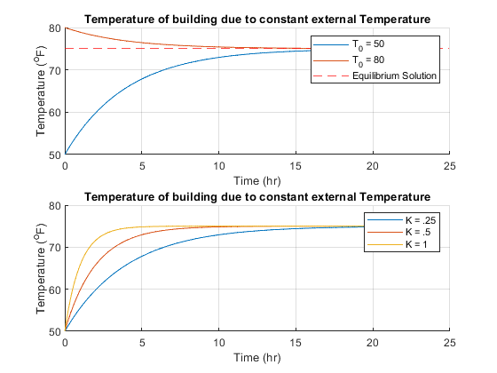
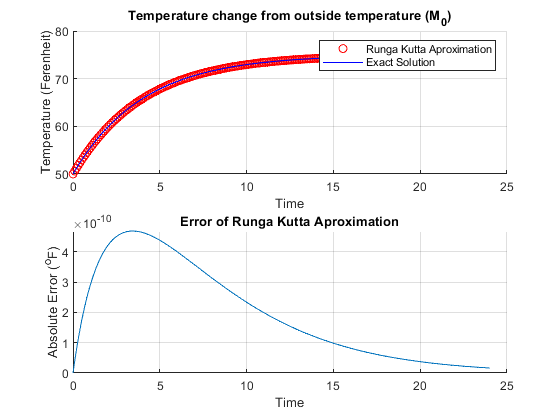
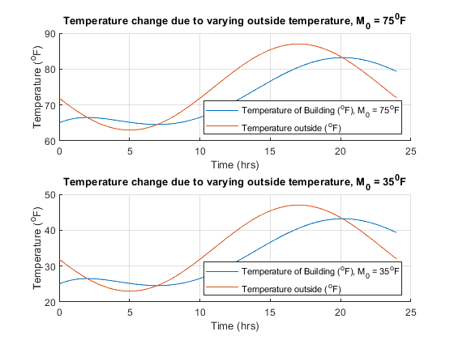
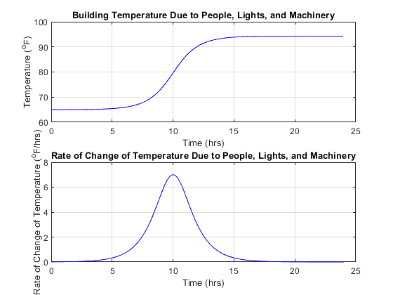
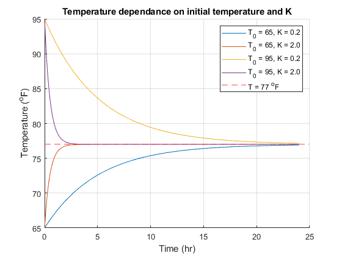
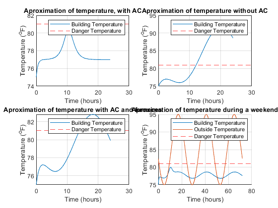

Contents
close all; clear; clc;
Section A
ta = 0:.1:24;
M_0a = 75;
Ka1 = 0.25;
T_0a1 = 50;
T_0a2 = 80;
fa = @(t,T).25*(75-T);
Ta_1 = M_0a+(T_0a1-M_0a).*exp(-Ka1.*ta);
Ta_2 = M_0a+(T_0a2-M_0a).*exp(-Ka1.*ta);
Ka2 = 1;
Ka3 = .5;
Ta_3 = M_0a+(T_0a1-M_0a).*exp(-Ka2.*ta);
Ta_4 = M_0a+(T_0a1-M_0a).*exp(-Ka3.*ta);
figure(1);
subplot(2,1,1);
hold on;
plot(ta,Ta_1);
plot(ta,Ta_2);
yline(M_0a,'r--');
grid on;
xlabel('Time (hr)');
ylabel('Temperature (^oF)');
title('Temperature of building due to constant external Temperature');
legend('T_0 = 50','T_0 = 80','Equilibrium Solution');
hold off;
subplot(2,1,2);
hold on;
plot(ta,Ta_1);
plot(ta,Ta_4);
plot(ta,Ta_3);
plot(ta,75,'r--');
grid on;
xlabel('Time (hr)');
ylabel('Temperature (^oF)');
title('Temperature of building due to constant external Temperature');
legend('K = .25','K = .5','K = 1');
hold off;

Section B
t_0 = 0;
t_f = 24;
h = 0.1;
m_0b = 75;
bT_0=50;
bk=0.25;
btime = t_0:h:t_f;
bf = @(et,eT).25*(m_0b-eT);
[bint_t, bint_T] = rk4(t_0,t_f,240,bT_0,bf);
T_of_tb = m_0b+(bT_0-m_0b)*exp(-bk*btime);
figure (2);
subplot(2,1,1);
hold on;
plot(bint_t,bint_T,'ro');
plot(btime,T_of_tb,'color','b');
legend('Runga Kutta Aproximation','Exact Solution');
grid on;
xlabel('Time');
ylabel('Temperature (Ferenheit)');
title('Temperature change from outside temperature (M_0)')
hold off;
subplot(2,1,2);
hold on;
plot(btime,abs(T_of_tb - bint_T)./abs(bint_T));
title('Error of Runga Kutta Aproximation');
xlabel('Time');
ylabel('Absolute Error (^oF)');
grid on;

Section C
tc = 0:.1:24;
K = .25;
M_0c1 = 75;
M_0c2 = 35;
Cc = -10+12*K*((cos(-5*pi/12)*(1/K)+(pi/12)*sin(-5*pi/12)*(1/K^2))/(pi^2/(144*K^2)+1));
Tc1 = M_0c1 -12*K*((cos((tc-5).*pi./12).*(1/K)+(pi/12)*sin((tc-5).*pi./12).*(1/K^2))./(pi^2/(144*K^2)+1))+Cc./(exp(K*tc));
Mtc = M_0c1 - 12*cos(pi.*(tc-5)./12);
Tc2 = M_0c2 -12*K*((cos((tc-5).*pi./12).*(1/K)+(pi/12)*sin((tc-5).*pi./12).*(1/K^2))./(pi^2/(144*K^2)+1))+Cc./(exp(K*tc));
Mtc2 = M_0c2 - 12*cos(pi.*(tc-5)./12);
[Tcmax1,tcmax1]=max(Tc1);
[Tcmax2,tcmax2]=max(Tc2);
[Mcmax1,Mtcmax1] = max(Mtc);
[Mcmax2,Mtcmax2] = max(Mtc2);
[Tcmin1,tcmin1] = min(Tc1);
[Tcmin2,tcmin2] = min(Tc2);
[Mcmin1,Mtcmin1] = min(Mtc);
[Mcmin2,Mtcmin2] = min(Mtc2);
figure(3);
subplot(2,1,1);
hold on;
plot(tc,Tc1);
plot(tc,Mtc);
grid on;
xlabel('Time (hrs)');
ylabel('Temperature (^oF)');
title('Temperature change due to varying outside temperature, M_0 = 75^0F');
legend('Temperature of Building (^oF), M_0 = 75^oF','Temperature outside (^oF)','location','southeast');
hold off;
subplot(2,1,2);
hold on;
plot(tc,Tc2);
plot(tc,Mtc2);
grid on;
xlabel('Time (hrs)');
ylabel('Temperature (^oF)');
title('Temperature change due to varying outside temperature, M_0 = 35^0F');
disp('');
legend('Temperature of Building (^oF), M_0 = 35^oF','Temperature outside (^oF)','location','southeast');
hold off;
tcmaxm = (.1*tcmax1-floor(.1*tcmax1))*60;
tcmaxh = floor(0.1*tcmax1);
tcmaxm2 = (.1*tcmax2-floor(.1*tcmax2))*60;
tcmaxh2 = floor(0.1*tcmax2);
mtcmaxm = (.1*Mtcmax1-floor(.1*Mtcmax1))*60;
mtcmaxh = floor(0.1*Mtcmax1);
mtcmaxm2 = (.1*Mtcmax2-floor(.1*Mtcmax2))*60;
mtcmaxh2 = floor(0.1*Mtcmax2);
tcminm = (.1*tcmin1-floor(.1*tcmin1))*60;
tcminh = floor(0.1*tcmin1);
tcminm2 = (.1*tcmin2-floor(.1*tcmin2))*60;
tcminh2 = floor(0.1*tcmin2);
mtcminm = (.1*Mtcmin1-floor(.1*Mtcmin1))*60;
mtcminh = floor(0.1*Mtcmin1);
mtcminm2 = (.1*Mtcmin2-floor(.1*Mtcmin2))*60;
mtcminh2 = floor(0.1*Mtcmin2);
fprintf('(Part C) Max temperature of the building is %2.2f at %g hours and %g minutes for M_0 of 75 F \n',Tcmax1,tcmaxh,tcmaxm-6);
if Tcmax1<81
disp('The building does not exceed the max safe temperature of 81 F');
end
if Tcmax1>81
disp('Equipment will be damaged by the high temperature.');
end
fprintf('(Part C) Max temperature of the building is %2.2f at %g hours and %g minutes for M_0 of 35 F\n',Tcmax2,tcmaxh2,tcmaxm2-6);
if Tcmax2<81
disp('The building does not exceed the max safe temperature of 81 F');
end
if Tcmax2>81
disp('Equipment will be damaged by the high temperature.\n');
end
fprintf('The min temperature inside is %1.0f for M_0 = 75 and %2.0f for M_0=35. This occurs after %g hours and %1.0f minutes for both instances.\n',Tcmin1,Tcmin2,tcminh,tcminm-6);
disp(' ');
fprintf('The max temperature outside is %2.0f for M_0 = 75 and %2.0f for M_0=35. This occurs after %g hours and %1.0f minutes for both instances.\n',Mcmax1,Mcmax2,mtcmaxh,mtcmaxm-6);
fprintf('The min temperature outside is %2.0f for M_0 = 75 and %2.0f for M_0=35. This occurs after %g hours and %1.0f minutes for both instances.\n',Mcmin1,Mcmin2,mtcminh,mtcminm-6);
(Part C) Max temperature of the building is 83.19 at 20 hours and 6 minutes for M_0 of 75 F
Equipment will be damaged by the high temperature.
(Part C) Max temperature of the building is 43.19 at 20 hours and 6 minutes for M_0 of 35 F
The building does not exceed the max safe temperature of 81 F
The min temperature inside is 65 for M_0 = 75 and 25 for M_0=35. This occurs after 7 hours and 0 minutes for both instances.
The max temperature outside is 87 for M_0 = 75 and 47 for M_0=35. This occurs after 17 hours and 0 minutes for both instances.
The min temperature outside is 63 for M_0 = 75 and 23 for M_0=35. This occurs after 5 hours and 0 minutes for both instances.

Section D
dx=0:.1:24;
dy=(28/3)*(atan(sinh(0.75*dx-7.5)))+79.65044;
figure(4)
subplot(2,1,1)
plot(dx,dy,'-b')
grid on
title('Building Temperature Due to People, Lights, and Machinery')
xlabel('Time (hrs)')
ylabel('Temperature (^oF)')
dy2=7*(sech(0.75*dx-7.5));
subplot(2,1,2)
plot(dx,dy2,'-b')
grid on
title('Rate of Change of Temperature Due to People, Lights, and Machinery')
xlabel('Time (hrs)')
ylabel('Rate of Change of Temperature (^oF/hrs)')
[dm,dt]=max(dy);
dmin=(dt/10-floor(dt/10))*60;
dtime=floor(dt/10);
fprintf('(Part D) The maximum temperature in the building is %3.2f F and occurs at %1.0f hours %1.0f minutes.\n',dm,dtime,dmin-6);
disp(' ');
(Part D) The maximum temperature in the building is 94.31 F and occurs at 24 hours 0 minutes.

Section E
T_0e1 = 65;
T_0e2 = 95;
Td1 = 77;
ke1 = .2;
ke2 = 2;
te = 0:.1:24;
Te1 = (T_0e1-Td1)./exp(ke1.*te)+Td1;
Te2 = (T_0e1-Td1)./exp(ke2.*te)+Td1;
Te3 = (T_0e2-Td1)./exp(ke1.*te)+Td1;
Te4 = (T_0e2-Td1)./exp(ke2.*te)+Td1;
figure(5);
hold on;
plot(te,Te1);
plot(te,Te2);
plot(te,Te3);
plot(te,Te4);
yline(Td1,'r--');
grid on;
xlabel('Time (hr)');
ylabel('Temperature (^oF)');
title('Temperature dependance on initial temperature and K');
legend('T_0 = 65, K = 0.2','T_0 = 65, K = 2.0','T_0 = 95, K = 0.2','T_0 = 95, K = 2.0','T = 77 ^oF')

Section F
t_0 = 0;
t_f = 24;
h = 0.1;
T_0=75;
K = 0.5;
t_f2 = 72.0;
time = t_0:h:t_f2;
bt=zeros((t_f-t_0)/h,1);
f = @(t,T)7*sech(.75*(t-10))+2*(77-T);
g = @(t,T)0.25*(85-10*cos(pi*(t-5)/12)-T);
j = @(t,T)0.25*(85-10*cos(pi*(t-5)/12)-T)+K*(77-T);
l = @(t,T)0.25*(85-10*cos(pi*(t-5)/12)-T)+K*(77-T)+7*sech(.75*(t-10))+2*(77-T);
M = @(t,T)85-10*cos(pi*(t-5)/12);
[int_t, int_T] = rk4(t_0,t_f,240,T_0,f);
[int_t1, int_T1] = rk4(t_0,t_f,240,T_0,g);
[int_t2, int_T2] = rk4(t_0,t_f,240,T_0,j);
[int_t3, int_T3] = rk4(t_0,t_f2,240,T_0,l);
figure(6);
subplot(2,2,1);
plot(int_t,int_T);
title('Aproximation of temperature, with AC');
xlabel('Time (hours)');
ylabel('Temperature (^oF)');
yline(81,'r--');
legend('Building Temperature','Danger Temperature');
grid on;
subplot(2,2,2);
plot(int_t1,int_T1);
title('Aproximation of temperature without AC');
xlabel('Time (hours)');
ylabel('Temperature (^oF)');
yline(81,'r--');
legend('Building Temperature','Danger Temperature');
grid on;
subplot(2,2,3);
plot(int_t2,int_T2);
title('Aproximation of temperature with AC and furnaces');
xlabel('Time (hours)');
ylabel('Temperature (^oF)');
yline(81,'r--');
legend('Building Temperature','Danger Temperature');
grid on;
subplot(2,2,4);
hold on;
plot(int_t3,int_T3,time,M(time));
title('Aproximation of temperature during a weekend');
xlabel('Time (hours)');
ylabel('Temperature (^oF)');
yline(81,'r--');
legend('Building Temperature','Outside Temperature','Danger Temperature');
grid on;
[max_T,max_t] = max(int_T);
[max_T1,max_t1] = max(int_T1);
[max_T2,max_t2] = max(int_T2);
[max_T3,max_t3] = max(int_T3);
actual1 = (max_t/10);
rem = actual1 - floor(actual1);
actual1m = rem*60;
actual2 = max_t1/10;
rem = actual2 - floor(actual2);
actual2m = rem*60;
actual3 = max_t2/10;
rem = actual3 - floor(actual3);
actual3m = rem*60;
actual4 = max_t3/10;
rem = actual4 - floor(actual4);
actual4m = rem*60;
[min_T,min_t] = min(int_T);
[min_T1,min_t1] = min(int_T1);
[min_T2,min_t2] = min(int_T2);
[min_T3,min_t3] = min(int_T3);
actual1hr = (min_t/10);
rem = actual1hr - floor(actual1hr);
actual1min = rem*60;
actual2hr = min_t1/10;
rem = actual2hr - floor(actual2hr);
actual2min = rem*60;
actual3hr = min_t2/10;
rem = actual3hr - floor(actual3hr);
actual3min = rem*60;
actual4hr = min_t3/10;
rem = actual4hr - floor(actual4hr);
actual4min = rem*60;
fprintf('(Part F1) Maximum Value 1: %2.2f F at %g hours %g minutes\n',max(int_T),floor(actual1),actual1m-6);
fprintf('(Part F2)Maximum Value 2: %2.2f F at %g hours %g minutes \n',max(int_T1),floor(actual2),actual2m-6);
fprintf('(Part F3) Maximum Value 3: %2.2f F at %g hours %g minutes\n',max(int_T2),floor(actual3),actual3m-6);
fprintf('(Part F4) Maximum Value 4: %2.2f F at %g hours %g minutes\n',max(int_T3),floor(actual4),actual4m-6);
disp(' ');
fprintf('(Part F1) Minumum Value 1: %2.2f F at %g hours %g minutes\n',min(int_T),floor(actual1hr),actual1min-6);
fprintf('(Part F2) Minumum Value 2: %2.2f F at %g hours %g minutes\n',min(int_T1),floor(actual2hr),actual2min-6);
fprintf('(Part F3) Minumum Value 3: %2.2f F at %g hours %g minutes\n',min(int_T2),floor(actual3hr),actual3min-6);
fprintf('(Part F4) Minumum Value 4: %2.2f F at %g hours %g minutes\n',min(int_T3),floor(actual4hr),actual4min-6);
disp(' ');
asymptote = floor(int_T(240));
fprintf('The temperature in graph a approaches %2.0f degreees farenheight\n',asymptote);
disp(' ');
delta_t1 = 0;
t_first1 = 0;
for i = 1:length(int_T)
if int_T(i)>=81
delta_t1 = delta_t1+1;
if t_first1 == 0
t_first1 = i;
end
end
end
delta_t1 = delta_t1*0.1;
t_first1 = t_first1*0.1;
t_first2 = 0;
delta_t2 = 0;
for i = 1:length(int_T1)
if int_T1(i)>=81
delta_t2 = delta_t2+1;
if t_first2 == 0
t_first2 = i;
end
end
end
delta_t2 = delta_t2*0.1;
t_first2 = t_first2*0.1;
delta_t3 = 0;
t_first3 = 0;
for i = 1:length(int_T2)
if int_T2(i)>=81
delta_t3 = delta_t3+1;
if t_first3 == 0
t_first3 = i;
end
end
end
delta_t3 = delta_t3*0.1;
t_first3 = t_first3*0.1;
delta_t4 = 0;
for i = 1:length(int_T3)
if int_T3(i)>=81
delta_t4 = delta_t4+1;
end
end
delta_t4 = delta_t4*0.1;
fprintf('With AC, the building spends %2.0f hours above the dangerous temperature. \n', delta_t1);
fprintf('With no AC, the building spends %2.0f hours above the dangerous temperature. \n', delta_t2);
fprintf('With AC and furnaces, the building spends %2.0f hours above the dangerous temperature. \n', delta_t3);
fprintf('With all effects, the building spends %2.0f hours above the dangerous temperature. \n', delta_t4);
disp(' ');
fprintf('With no AC, the building exceeds the dangerous temperature after %2.2f hours\n',t_first2-.1);
fprintf('With AC and furnaces, the building exceeds the dangerous temperature after %2.2f hours\n',t_first3-.1);
(Part F1) Maximum Value 1: 80.32 F at 10 hours 24 minutes
(Part F2)Maximum Value 2: 91.82 F at 20 hours 6 minutes
(Part F3) Maximum Value 3: 82.81 F at 18 hours 18 minutes
(Part F4) Maximum Value 4: 79.97 F at 3 hours 30 minutes
(Part F1) Minumum Value 1: 75.00 F at 0 hours 0 minutes
(Part F2) Minumum Value 2: 75.00 F at 0 hours 0 minutes
(Part F3) Minumum Value 3: 75.00 F at 0 hours 0 minutes
(Part F4) Minumum Value 4: 75.00 F at 0 hours 0 minutes
The temperature in graph a approaches 77 degreees farenheight
With AC, the building spends 0 hours above the dangerous temperature.
With no AC, the building spends 12 hours above the dangerous temperature.
With AC and furnaces, the building spends 9 hours above the dangerous temperature.
With all effects, the building spends 0 hours above the dangerous temperature.
With no AC, the building exceeds the dangerous temperature after 12.20 hours
With AC and furnaces, the building exceeds the dangerous temperature after 14.00 hours
